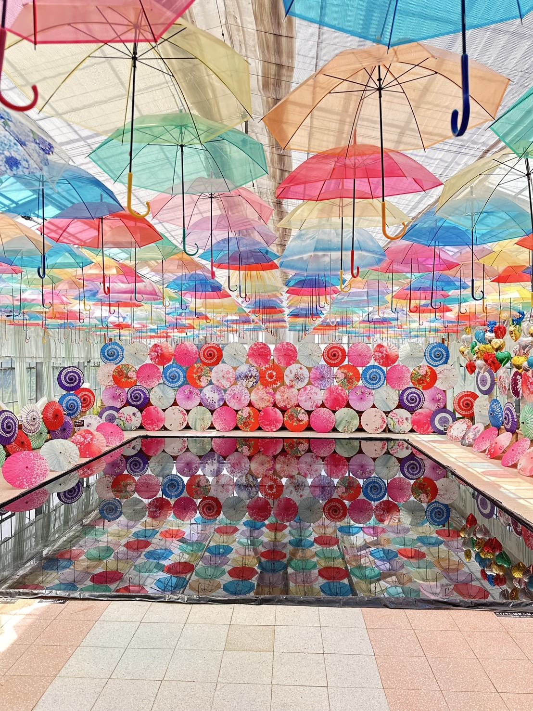
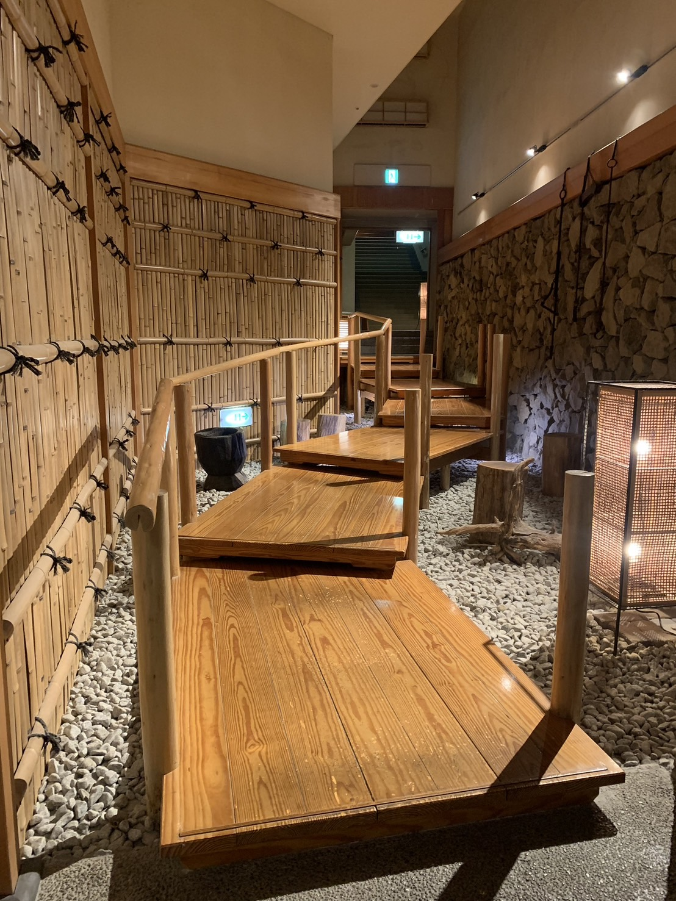
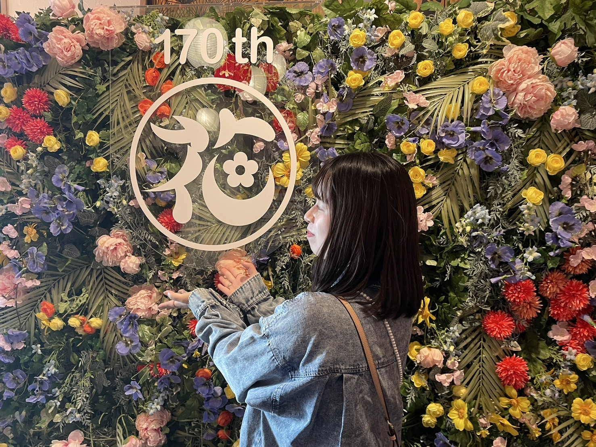
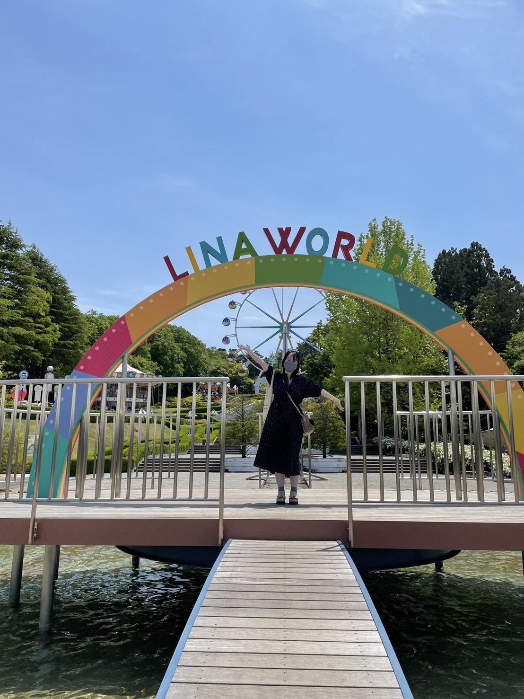
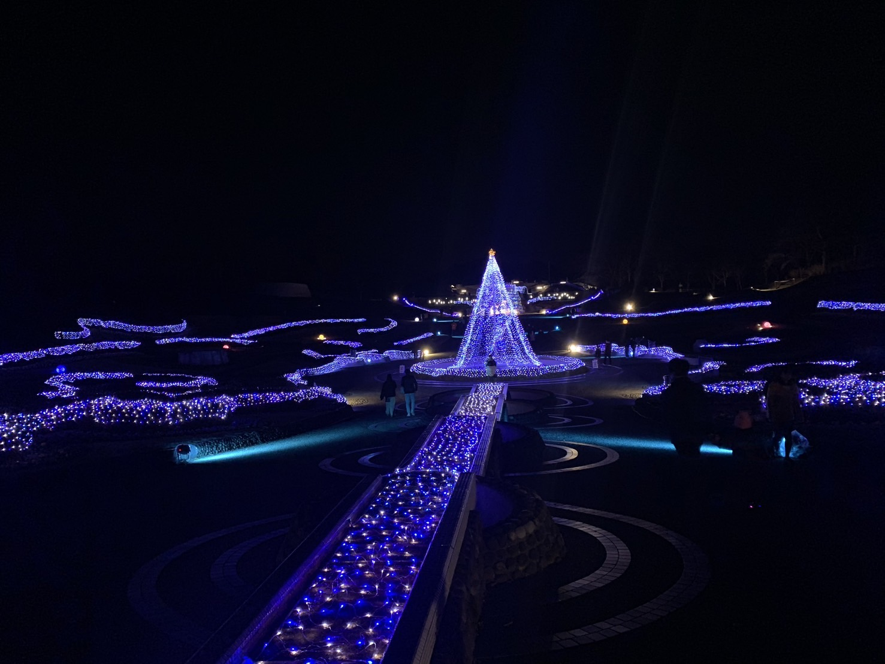
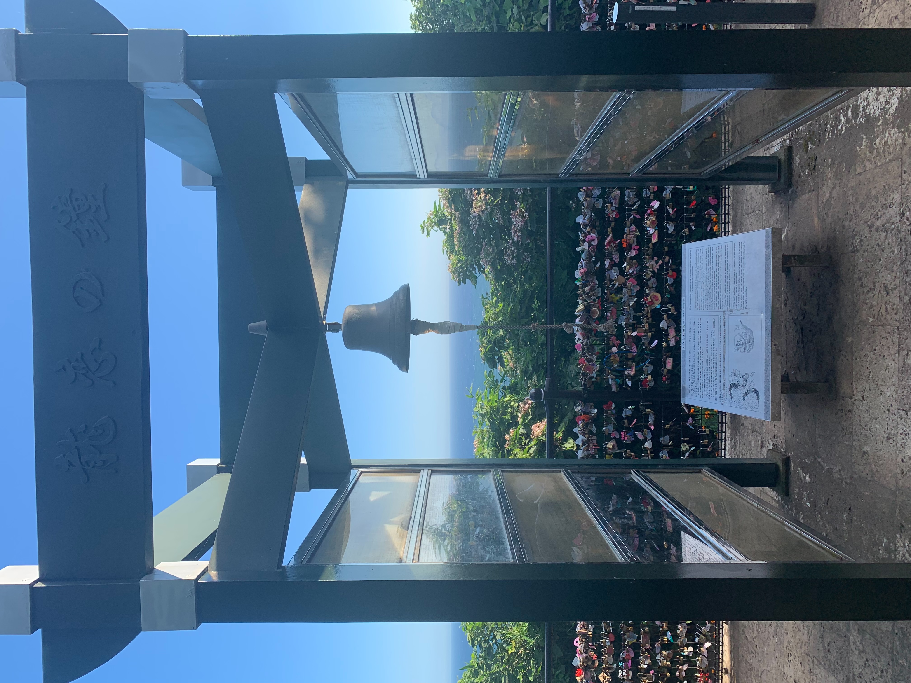
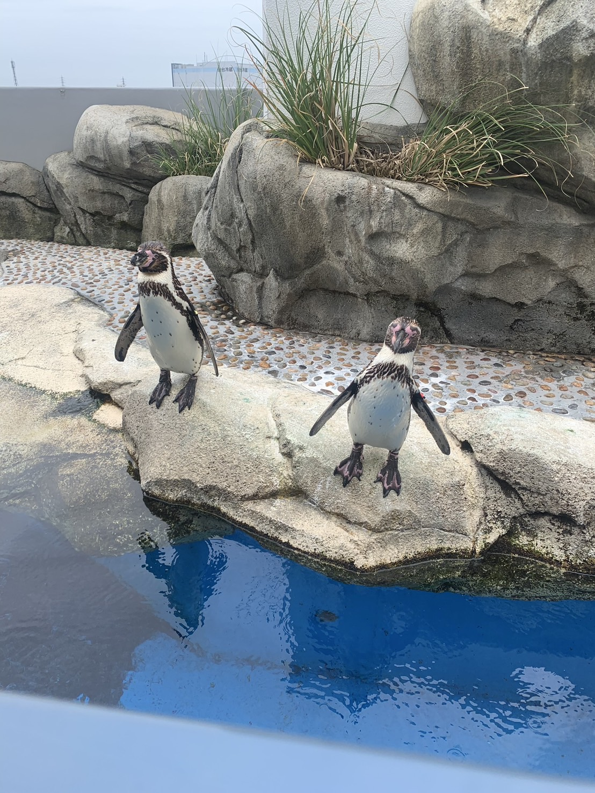
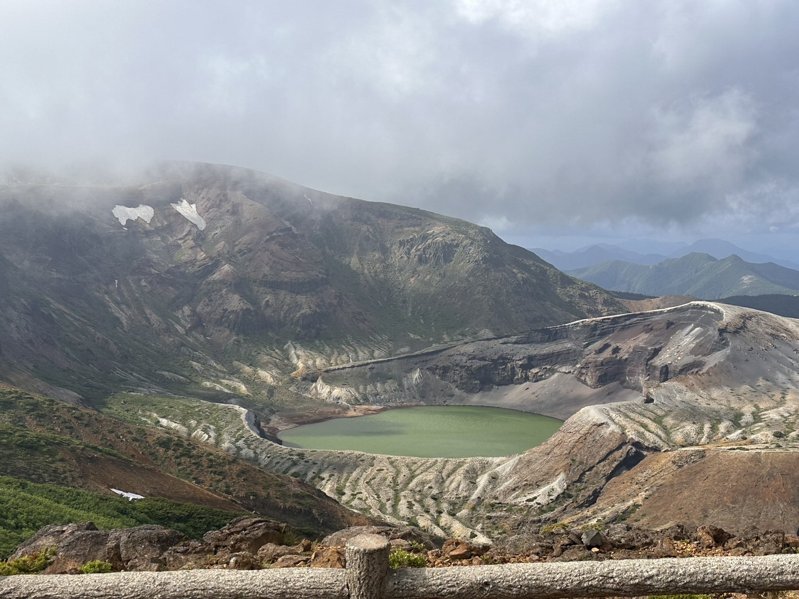
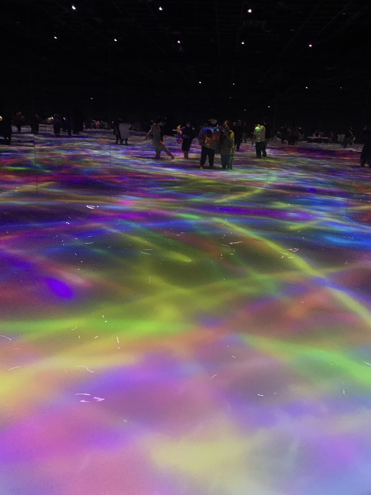

World

①猪苗代ハーブ園
季節によって様々なお花が咲くガーデンや映えること間違いなしのフォトスポットがある場所です。
福島県耶麻郡猪苗代町

②作並温泉 ゆづくしSalon一の坊
オールインクルーシブの温泉リゾート。数種類の温泉、料理人が目の前で作るオーダービュッフェ等贅沢な気分を味わうことができる空間です。
宮城県仙台市青葉区

③浅草花やしき
日本最古の趣ある遊園地。園内のローラーコースターは昭和28年に生まれた日本現存最古のローラーコースターでこのコースターに乗ってみたいと園に訪れる観光客も多いです。
東京都台東区浅草

④リナワールド
東北最大級の遊園地。全30種類の豊富なアトラクションと自然に囲まれた地であるため山形に行ったら一度は訪れたい場所です。
山形県上山市金瓶

⑤国営みちのく杜の湖畔公園
毎年冬に開催されるイルミネーション。約11万球の藍色の灯りで蔵王から注ぐ清流と満点の星空を表現しています。遊具や広場もあるため昼間は家族みんなで遊びに出かけられる場所です。
宮城県柴田郡川崎町

⑥恋人の丘「龍恋の鐘」
五頭龍伝説の恋物語にちなんで作られた場所。鐘の周りのフェンスには願いの込められた南京錠がかかっており、景色の素晴らしい場所です。
神奈川県藤沢市江の島

⑦仙台うみの杜水族館
東北最大級の観覧席を有するイルカやアシカのショーを見ることができたり、ペンギンたちと触れ合うことができる水族館です。
宮城県仙台市宮城野区

⑧蔵王の御釜
五色岳の火口湖。湖面はエメラルド色で美しくハッキリ見えるのは約30%ほどと言われています。
宮城県刈田郡蔵王町

⑨teamLab✯Planets TOKYO DMM
水に入るミュージアムと花と一体化する庭園がある空間。作品は人の動きによって変化し中に入ると不思議な感覚に陥ります。
東京都江東区豊洲
LOCATION
↑